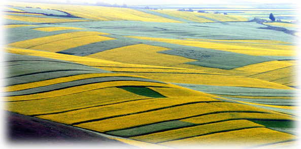

青海简介
雄踞“世界屋脊”的青海省是个神秘而诱人的地方，她仿佛是一块未经雕琢的玉石，粗拙中透出珠光宝气，平静中显出神奇风采。 青海为我国青藏高原上的重要省份之一，因境内有全国最大的内陆咸水湖──青海湖，而得省名。青海省简称青，是长江、黄河、澜沧江的发源地，被誉为“江河源头”、“中华水塔”。
（1） 地理位置：
青海地处青藏高原东北部，西高东低，西北高中间低，地形复杂多样，形成了独具特色的高原大陆性气候，日照时间长，空气稀薄，大部分地区海拔在3000―5000米之间，为长江、黄河、澜沧江等大河的发源地。青海属大陆性高原气候，温差大、日照长、降水少。农业以小麦、青稞、蚕豆、马铃薯、油菜为主。日月山以西为牧业区，属高原牧区，牧区内草原广袤，牧草丰美，是我国著名的四大牧区之一。
境内山脉高耸，地形多样，河流纵横，湖泊棋布。巍巍昆仑山横贯中部，唐古拉山峙立于南，祁连山矗立于北，茫茫草原起伏绵延，柴达木盆地浩瀚无垠。长江、黄河之源头在青海，中国最大的内陆高原咸水湖也在青海。
三江源地区位于我国的西部、青藏高原的腹地、青海省南部，为长江、黄河和澜沧江的源头汇水区。地理位置为北纬31°39'～36°12'东经89°45'～102°23'，行政区域涉及包括玉树、果洛、海南、黄南四个藏族自治州的16个县和格尔木市的唐古拉乡，总面积为30.25万KO，约占青海省总面积的43%
远看是高山，近看似平川――游客如此勾勒青藏地貌，那是从飞机上鸟瞰所得印象。飞机飞近横亘于甘肃与青海间的祁连山时，看到这千尺绝壁的高山会感到惊讶；飞机越过界山后的起伏山地，却见大片的青海湖，以及辽阔的柴达木盆地（面积大约二十七万平方公里），使人难于置信这是高原上的平川。再往南飞，昆仑山脉、巴颜喀拉山脉、唐古拉山脉自西逶迤，看似高出地面不过五百至一千公尺之间的缓坡，起伏于高原之上。山脚谷地是一片草原景色，要不是高达雪线（海拔四千公尺）以上的雪峰，像大海上的白头浪花漫卷在高原之上，也许会把那片草原当作沿海平原上的低矮丘陵地。
高原上的山岭虽然不见高耸千仞，却是雪线以上的冰川雪峰，冰雪融化成的雪水，长年渗进草甸下漫流，聚成沼泽，汇成溪流，再汇百川而成黄河、长江。黄河水像摇篮似的抚育中华民族；长江水则滋润中原大地。
（2）历史沿革： 
青海[1][2]古称西海、鲜水海、卑禾羌海，自十六国时期称青海。藏语称错温波，蒙古语称库库诺尔，均意为青色的湖。古为西戎地，汉为西羌地。西汉后期曾于湖北岸置西海郡，隋朝时北部是中国领土，1242年全部并入蒙古大汗国，蒙古大汗国后成为元朝，从元朝开始时全部是中国领土，其土地属宣政院管辖；明属朵甘都司等；清朝初为卫藏地，后分设西宁办事大臣，又称青海办事大臣，为青海得名的开始；中华民国初设青海办事长官，后属甘边宁海镇守使，之后建青海省，省名至今未变。1928年设青海省，省会西宁，位于我国西北地区，地处青藏高原东北部，面积72.23万平方公里，东西长1200多公里，南北宽800多公里，辖6州、1地、1市、51个县级行政单位，与甘肃、四川、西藏、新疆接壤。青海东部素有“天河锁钥”、“海藏咽喉”、“金城屏障”、“西域之冲”和“玉塞咽喉”等称谓，可见地理位置之重要。
（3）丰富资源
一、水能资源
全省有270多条较大的河流，水量丰沛，水能储量在1万千瓦以上的河流就有108条，流经之处，山大沟深，落差集中，有水电站坝址178处，总装机容量2166万千瓦，在国内居第5位，居西北之首。尤其是黄河上游从龙羊峡至寺沟峡的276公里河段上，水流落差大，地质条件好，淹没损失小，投资省，造价低，水电站单位造价比全国平均水平低20―40％，初步规划可建设6座大型电站和7座中型电站，总装机1100万千瓦，年发电量368亿千瓦时，是我国水能资源的“富矿”带。
二、盐湖资源
柴达木盆地有33个盐湖，已初步探明氯化钠储量3263亿吨、氯化钾4.4亿吨、镁盐48.2亿吨、氯化锂1392万吨、锶矿1592万吨、芒硝68.6亿吨，上述储量均居全国第1位，其中氯化镁、氯化钾、氯化锂等储量均占全国已探明储量的90％以上。溴储量18万吨、硼矿1157万吨，居全国第2位。盐湖资源不仅储量大，而且品位高、类型全、分布集中，资源组合好，开采条件优越。
三、石油天然气资源
主要分布在柴达木盆地西北部，目前共发现16个油田，6个气田。石油资源量达12亿多吨，已探明2.08亿吨；天然气资源量2937亿立方米，已探明663.29亿立方米。
四、有色金属和黄金资源
储量较大的有铅115万吨、锌153万吨、铬23万吨。此外，镍、钴、钼、钨、锡、汞也有相当大的储量。岩金和砂金分布广泛，很有勘探和开发前途。
五、非金属矿产资源
全省共发现矿种36种，有5种列全国第1位。主要有石棉、石膏、石英、石灰岩、石墨等，其中石棉保有储量占全国的63%。
六、畜牧业资源
青海是中国五大牧区之一和重要的畜牧业生产基地，有5亿亩可利用草场，有各类牲畜2300多万头，其中被称为“雪山之舟”的牦牛有500万头，接近全国的一半；绵羊1400多万只，藏系羊所产“西宁毛”是上好的地毯原料。
七、高原野生动植物资源
全省仅陆栖脊椎动物就有270余种，经济兽类110种，鸟类294种，鱼类40余种；野生植物群落中已发现经济植物1000余种，药用植物680余种，著名中药50多种。野生动植物中有许多是属于国家一、二类重点保护对象。
八、旅游资源
青海名胜古迹众多，自然风光雄奇壮美，具有青藏高原特色。汉、藏回、蒙古、土、撒拉等民族历史悠久，民俗风情别具一格，极富情趣。全省已形成东部、中部和西部三大旅游区，旅游设施日渐配套，可为国内外旅游者提供多种有效旅游措施。
（4）人口民族
2008年末全省常住人口554.3万人。分城乡看，城镇人口226.5万人，占常住人口的比重为40.9%；乡村人口327.8万人，占59.1%。分性别看，男性人口279.3万人；女性人口275万人。分年龄看，0-14岁人口123.5万人，占常住人口总数的22.3%；15-64岁人口395.7万人，占71.4%；65岁及以上人口35.1万人，占6.3%。全年出生人口8.01万人，出生率为14.49‰，比上年下降0.44个千分点；全年死亡人口3.39万人，死亡率为6.14‰。全年自然增加人口4.62万人，比上年减少0.22万人，人口自然增长率为8.35‰，比上年下降0.45个千分点。
年末全省就业人员303.93万人。其中，城镇就业人员103.35万人，比上年增加5.29万人，增长5.4%。城镇登记失业率为3.9%，实现了控制在4.5%以内的预定目标。
青海省是个多民族聚居的省份，主要有汉、藏、其他有回、蒙古、土、撒拉等全国所有56个民族中的54个，到2008年末，常住人口554.3万人，其中少数民族人口占42.8%，234.4万人。
（5）社会经济
经济总量：2008年，全省实现生产总值961.53亿元，按可比价计算，比上年增长12.7%，比上年增速高0.2个百分点，是1985年以来增速最高的一年；人均生产总值17389元，增长12.1%。全年第一产业完成增加值105.58亿元，增长3.9%；第二产业完成增加值529.4亿元，增长16.5%；第三产业完成增加值326.55亿元，增长10.0%。第一、第二和第三产业对GDP的贡献率分别为3.06%、66.72%、30.22%。三次产业结构由2007年的10.6：53.3：36.1转变为11 ：55 ：34。
财政：全年全省财政一般预算收入136.51亿元，比上年增长23.6%。其中，地方一般预算收入71.56亿元，增长26.2%；中央一般预算收入64.95亿元，增长20.8%。
全年全省工业增加值442.85亿元，按可比价格计算，比上年增长19.5%，其中规模以上工业增加值增长21.5%。
全年接待国内外旅游人数905万人次，比上年下降9.7%。其中国内旅游人数902万人次，下降9.5%；境外入境人数3万人次，下降40.3%;国际旅游外汇收入1014.73万美元，下降36.2%。国际国内旅游总收入47.51亿元，增长0.3%。
全年城镇居民人均可支配收入11648.3元，比上年增长13.35%。农牧民人均纯收入3061.24元，比上年增长14.06%。
全年城镇居民人均可支配收入9000.35元，比上年增长11.7%；农牧民人均纯收入2358.37元，比上年增长8.9%。城镇居民恩格尔系数为36.23%，比上年下降0.08个百分点；农村居民恩格尔系数为44.2%，比上年下降0.97个百分点。年末城镇居民人均住房使用面积增加到18.54平方米，农牧民人均居住面积增加到18.53平方米。多方筹措资金，对8个州地市、39个县的277个绝对贫困村实施整村扶贫推进项目1181项，全年净解决农村贫困人口中15.23万人的温饱问题。
年末城镇参加养老保险人数62万人，比上年增长3.37%。其中，职工45万人，离退休人员17万人，分别增长4.53%和0.41%。城镇参加失业保险人数34.02万人，领取失业保险金人数1.03万人；工伤保险参保人数23.4万人。参加城镇医疗保险人数66万人；参加农村新型合作医疗的农牧民311.78万人。社会救助中，农村特困救助22.9万人、医疗救助25.5万人。城镇居民得到政府最低生活保障的21.2万人。救灾救济救助制度得到进一步实施和完善，各项社会福利业、社区服务业持续健康发展。
2009年青海省一般预算收入达到166.5亿元，增幅超过全国水平10.2个百分点。为预算的110.8%，比上年增收29.9亿元，增长21.9%。
|